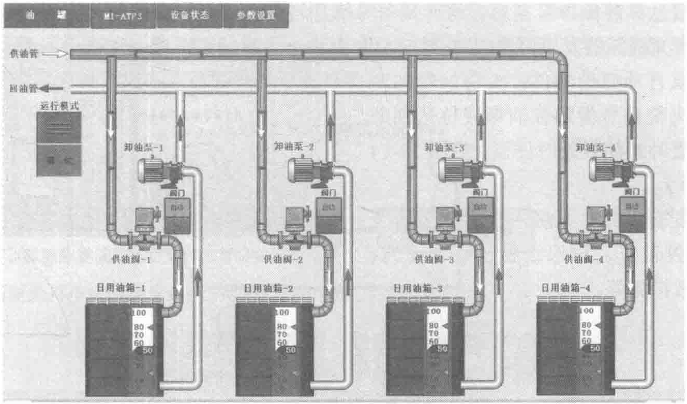
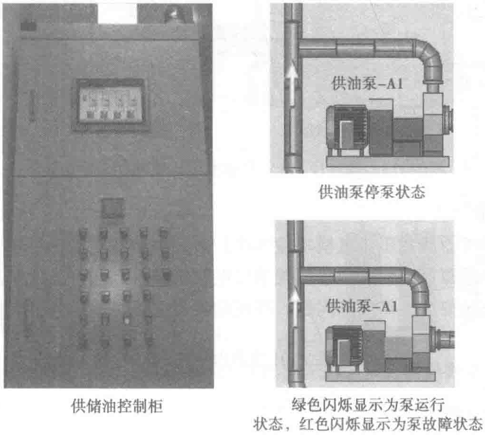

日用油箱控制模式分为手动模式和自动模式，手/自动模式均在就地控制柜上选择。在手动模式下供油阀可以手动启停，根据人工监视液位及设备状况进行手动操作，液位到达高液位时手动停泵，液位到划定供油液位位置时手动启泵。
在自动模式下系统根据液位信号判断是否自动启停供油泵，当液位低于低液位设定值时，供油泵接到信号后联锁加油阀自动打开加油，油位到达高液位时供油泵接到信号联锁加油阀关闭；当系统切换至自动模式时检测到油位高于设定的低液位时加油阀不动作并且保持关闭状态，只有到达低油位设定值加油阀才会打开，如图10-13所示。
